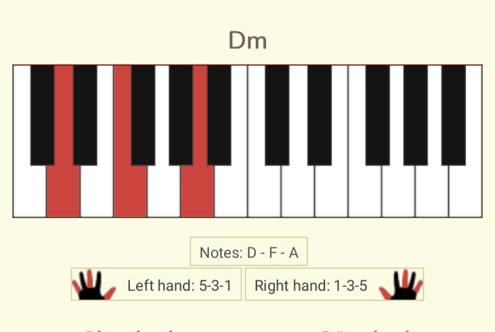

Ta(mara) al Piano, ~~`
Table of Contents
Acordes para piano | aprendiendo los acordes mayores y menores
Estos son solo apuntes, notas, pilladas de aquí y allá y un solo ejercicio matrix con la finalidad de hincarle el diente, un día de estos, a cualquier canción pop de la manera más fácil. So, please excuse simplificaciones.
Hay muchos tipos de acordes diferentes, siendo los más comunes: los mayores, menores, séptima, séptima mayor, cuarta aumentada y cuarta disminuida, y sexta.
Los acordes mayores y menores son los más sencillos y que te permitirán tocar el 90% de canciones comerciales. Así que sin lugar a dudas, son los primeros que debes aprender.
Existen 12 acordes mayores y 12 acordes menores. Las siete notas naturales con sus alteraciones (los bemoles y sostenidos)
Do Mayor, Do# Mayor, Re Mayor, Re# Mayor, Mi Mayor, Fa Mayor… hasta Si Mayor
Do menor, Do# menor, Re menor, Re# menor… hasta Si menor.
Y así hasta completar los 24.
Aprendérselos de memoria es posible, pero te resultará un aburrimiento terrible (no sé por qué pero digamos eso y ver si resulta que te anima a intentarlo, espero sí) tener que estar consultando tablas hasta que te los sepas. La mejor manera es que aprendas cómo construirlos sentado frente al piano, ya que todos se basan en las mismas normas.
Si leer teoría no te apetece en este momento, puedes empezar con el plan de entrenamiento de acordes y volver a la teoría después. Seguro que después de un par de días de práctica, te apetece llegar al fondo del asunto.
Y eso está perfectamente bien. Se aprende mucho mejor cuando uno tiene interés genuino que cuando otros se empeñan en que lo hagas.
Construyendo los acordes mayores y menores
La diferencia entre un acorde mayor y menor es una nota. Sin embargo esta nota cambia por completo el sentimiento que nos produce el acorde.
Un acorde mayor sonará alegre, un acorde menor sonará melancólico.
Vamos a ver cómo formar un acorde mayor, uno menor, y la diferencia entre ellos.
Un acorde mayor y un acorde menor comparten la nota raíz y la quinta.
Nota raíz e intervalo de quinta
Un acorde tiene una NOTA RAÍZ, que es la que da nombre al acorde
En los acordes Do Mayor y Do menor, la nota raíz es el Do.
Un acorde tiene una NOTA QUINTA. Una quinta es 7 semitonos más aguda que su nota raíz. Así que para encontrar la quinta en un teclado de piano, debes contar 7 teclas adyacentes (tanto blancas como negras) hacia la derecha.
En los acordes Do Mayor y Do menor, la nota quinta es el Sol.
Encontrar la quinta de cualquier tecla blanca te resultará muy intuitivo, ya que es la postura natural de la mano apoyada en las teclas. El pulgar en la raíz, y el meñique en la quinta (o al revés en la otra mano)
Veamos otro ejemplo: Fa natural y su quinta.
El único caso en el que la raíz y su quinta no son ambas teclas blancas es en el caso del Si y su quinta.
Recordemos entonces que para una nota cualquiera, por ejemplo, Do: su acorde Do Mayor y su acorde Do menor tienen la misma raíz (DO) y su misma quinta (SOL)
Los acordes mayores y menores se diferencian en su nota tercera.
Tercera mayor y tercera menor en acordes de piano
Un acorde mayor se construye con una tercera mayor.
Un acorde menor se construye con una tercera menor. Fácil de recordar, ¿no?
Una tercera mayor son 4 semitonos, es decir, 4 teclas adyacentes hacia la derecha
Sabiendo esto, vamos a terminar de construir el acorde de Do Mayor, contando 4 teclas hacia la derecha.
Para el acorde menor, una tercera menor son 3 semitonos, es decir, 4 notas adyacentes hacia la izquierda.
Cómo aprender los acordes para piano en orden de utilidad
Para que no se te haga una tarea sobrehumana, hay dos sencillas claves que debes tener en cuenta.
- Clave nº 1:
No intentes aprenderte los 24 acordes de golpe. Empieza con los acordes que forman la clave de Do Mayor.
Resulta que en esta clave (y en cualquier clave mayor y menor) solo nos encontramos siete acordes, y el séptimo casi no se utiliza en música popular. Así que con seis acordes podrás interpretar el 90% de las canciones comerciales. Aquí te explico cómo transponer cualquier canción a clave de Do.
- Clave nº 2:
El truco está en recordar la forma de la mano en el piano, en lugar de las notas que lo componen. Me refiero a qué dedos están en tecla blanca, y qué dedos en tecla negra.
Y resulta que dentro de estos 6 acordes en Clave de Do solo tenemos una forma:
Blanca – blanca – blanca
¿No te parece que está chupadísimo?
Inversiones en acordes para piano
Un acorde tiene su posición raíz, que ya has aprendido.
En el caso de Do Mayor, su posición raíz es Do – Mi – Sol
A colocar las notas de un acorde en otro orden diferente se le llama inversión.
Para el Do Mayor (do – mi – sol) tenemos:
Primera inversión: Mi – Sol – Do
Segunda inversión: Sol – Do – Mi
Las tres son Do Mayor.
Progresión de acordes
Haciendo una metáfora: en el lenguaje musical las notas son las letras, los acordes son las palabras, y las frases serían una progresión de acordes.
Una progresión de acordes no es más que una sucesión de acordes: Do – La menor – Fa
Y resulta que hay algunas progresiones mucho más utilizadas que otras, que una progresión transmite un sentimiento diferente a otra, hay progresiones más usuales en un estilo que en otro…
Como todo el artículo está enfocado a dominar la música pop, que la recomiendo para para principiantes por ser la más sencilla, vamos a centrarnos en ella.
La ganadora indiscutible: *I - IV - V - vi*
Con esos acordes, y cualquier combinación que se te ocurra entre ellos, tienes para una vida de música.
Todas las combinaciones posibles de esos cuatro grados.
I - vi - IV - V
I - IV - vi - V
vi - IV - I - V
IV - I - V - iv
Omitiendo uno de esos grados.
I - V - IV -V
vi - V - IV - V
Si aumentamos la cantidad de acordes menores en la progresión, el tono se vuelve más melancólico o triste.
Añadiendo grado ii
I - ii - vi - IV
vi - ii - V - I
I - vi - ii - V
I - IV - ii - V
Añadiendo grado iii
vi - V - IV - iii
I - iii - vi - IV
Son 13 progresiones, pero ya ves que al final es todo dar vueltas sobre lo mismo. No tienes excusa para no darle caña y aprenderte estos seis acordes.
Plan de entrenamiento en clave de Do
Lo difícil no es comprender la teoría. Sino interiorizarla de tal forma que sea tan natural para ti como hablar. En ese momento es cuando la teoría se vuelve útil y te permite tocar música sin esfuerzo.
Eso no ocurre de la noche a la mañana, y por eso es importante saber cuál es la manera más eficiente de recorrerlo.
El Ejercicio Matrix ~~
En fin el nombre se me acaba ocurrir, no hacerle mucho caso. El asunto es que tengamos de donde empezar a tejer y detejer y para ello, he pensado que vendría bien visualizar, intentar y practicar el siguiente ejercicio. Y, en tres fases: Observar, estudiar acorde por acorde, y luego repetir y repetir hasta que las manos fluyan como hacia un manantial ~~
Observar
Los Acordes del Ejercicio Matrix.
Ahora la tares es estudiar acorde por acorde del ejercicio matrix, arriba…
C F Bdim Em Am Dm G C
- El lugar de la batalla en el centro del Universo.
Okay, antes conviene ubicarse. El teclado sobre el que harás el ejercicio, lo sabrás, es de 61 teclas. Y sus nombres y posiciones son a la vista, como más o menos se muestra en la siguiente foto:
Como ves, 61 teclas que repiten la (siguiente) escala varias veces, en concreto 5:
- Uno por uno y en fila.. ~~
Okay, ahora vemoslo every each por entero, first!. 
Y, otra vez, C:
Y ahora, qué?
Pues eso, practicar, practicar y practicar y ver qué sale!! ~~`